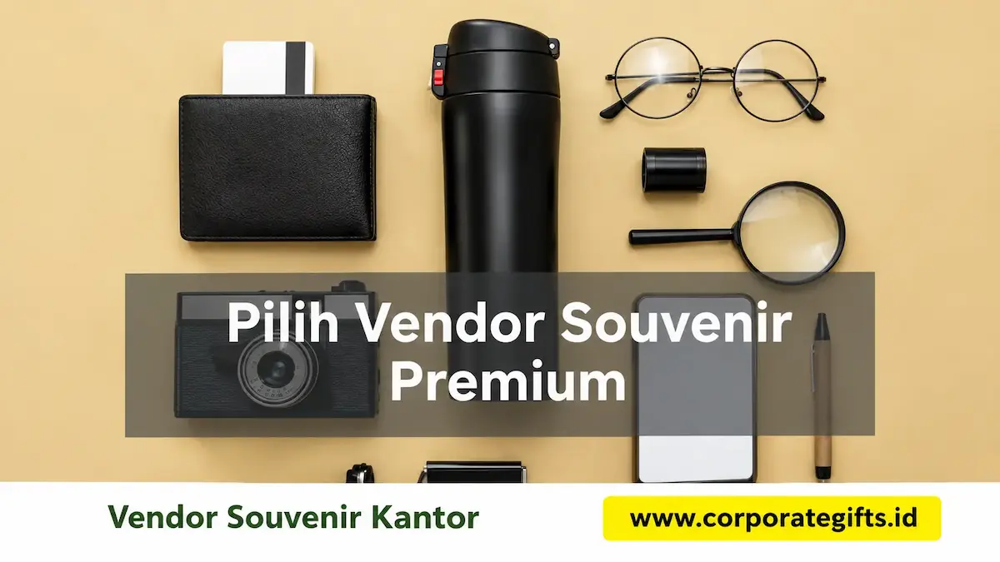

Corporate Gifts ID - Vendor souvenir kantor premium yang andal dapat diidentifikasi melalui lima pilar fundamental: rekam jejak portofolio kredibel, mutu bahan baku unggulan, fleksibilitas teknik custom branding, transparansi struktur harga, serta konsistensi ketepatan waktu pengiriman. Kelima aspek ini menjadi penentu utama apakah cinderamata yang diserahkan mampu merepresentasikan wibawa institusi secara elegan, atau justru menurunkan reputasi di hadapan klien dan mitra bisnis.
Memesan souvenir kantor untuk kebutuhan promosi tahunan, apresiasi kerja, maupun cinderamata rapat koordinasi bukan sekadar transaksi komoditas biasa. Memilih mitra vendor dengan checklist evaluasi yang ketat merupakan langkah mitigasi risiko strategis bagi divisi HR, General Affairs (GA), maupun Corporate Communication.
Poin Kunci Seleksi Vendor Souvenir Kantor Berkualitas:
- Material Bersertifikasi Mutu: Menjamin penggunaan bahan food-grade SUS 304, kulit PU tahan kupas, dan kertas daur ulang bersertifikasi FSC.
- Presisi Kustomisasi Logo: Penerapan teknologi grafir laser serat, sablon presisi mikro, atau deboss elegan yang tahan bertahun-tahun.
- Transparansi Rencana Anggaran Biaya: Ketiadaan biaya tersembunyi dengan penawaran invoice B2B yang jelas dan dapat dipertanggungjawabkan.
- Jaminan Sampel Sebelum Produksi Massal: Ketersediaan proofing digital dan sampel fisik guna memastikan zero-defect sebelum pengerjaan volume besar.
Mengapa Memilih Vendor Souvenir Kantor Premium Sangat Krusial?
Souvenir kantor bertindak sebagai representasi visual nyata dari nilai-nilai institusi. Kualitas barang yang dipegang langsung oleh klien VIP atau karyawan akan diasosiasikan langsung dengan standar mutu operasional perusahaan Anda:
- Konsistensi Identitas Visual: Vendor profesional mampu menjaga ketepatan tone warna logo (Pantone Matching System) agar serasi di berbagai media produk.
- Proteksi Reputasi Brand: Menghindari produk mudah patah, tumbler bocor, atau cetakan pudar yang merusak citra profesionalitas korporat.
- Kepastian Jadwal Pelaksanaan Acara: Manajemen rantai pasok yang matang memastikan barang tiba sebelum hari penyelenggaraan kegiatan.
- Dukungan Terhadap ESG & Sustainability: Ketersediaan opsi merchandise ramah lingkungan mendukung target pelestarian lingkungan korporat.
5 Aspek Utama dalam Menilai Vendor Souvenir Kantor Eksklusif
Lakukan peninjauan mendalam pada lima aspek berikut saat melakukan uji kelayakan vendor:
1. Portofolio dan Rekam Jejak Klien
Periksa portofolio dokumentasi riil pengerjaan proyek korporasi B2B sebelumnya. Vendor berpengalaman memiliki dokumentasi visual asli, testimoni klien ternama, dan studi kasus penanganan pesanan massal.
2. Standar Kualitas Material dan Uji Sampel
Minta sampel fisik sebelum menyepakati Surat Perintah Kerja (SPK). Evaluasi kerapian finishing sambungan, kehalusan jahitan agenda, dan kekuatan isolasi termal pada produk wadah minuman.

Proses quality control souvenir kantor: pemeriksaan ketebalan material, kerapian deboss logo, dan ketahanan bantalan busa hardbox.
3. Kelengkapan Mesin dan Opsi Custom Branding
Pastikan vendor menguasai beragam teknik branding yang sesuai dengan karakter produk:
- Laser Engraving: Menghasilkan ukiran logo permanen bernuansa perak atau emas pada permukaan logam dan kayu.
- Blind Deboss & Foil Stamping: Memberikan efek cekung mewah pada cover agenda kulit PU atau boks kemasan rigid.
- Digital UV Flatbed Printing: Menghadirkan cetakan warna gradasi resolusi tinggi pada media kaca, keramik, dan plastik ABS.
4. Struktur Harga Transparan dan Skema Pembayaran B2B
Pilihlah vendor yang menyediakan penawaran harga terperinci dengan komponen PPN, ongkos cetak, dan kemasan yang jelas. Skema pembayaran bertahap (termin) atau invoice tempo resmi menunjukkan stabilitas permodalan vendor.
5. Ketepatan Waktu dan Jaminan Purnajual
Vendor yang memiliki komitmen purnajual bersedia menandatangani klausul garansi penggantian unit baru tanpa biaya tambahan apabila ditemukan produk yang cacat produksi (defect).
Kesalahan Umum yang Harus Dihindari dalam Memilih Vendor
Hindari 4 jebakan umum yang sering merugikan panitia pengadaan:
- Tergiur Penawaran Harga di Bawah Pasar: Harga yang terlampau murah sering kali mengorbankan ketebalan plat logam, grade stainless steel (menggunakan non-food grade), atau tinta sablon beracun.
- Tidak Meminta Sampel Fisik: Mengandalkan foto digital katalog rentan menimbulkan salah persepsi mengenai ukuran dimensi dan tekstur asli barang.
- Memesan Terlalu Dekat dengan Hari H: Waktu pengerjaan yang terlalu mepet membatasi proses quality control dan meningkatkan risiko keterlambatan pengiriman.
- Mengabaikan Reputasi Legalitas Usaha: Bermitra dengan pihak perorangan tanpa NPWP aktif menyulitkan pelaporan pertanggungjawaban audit internal.
Tabel Checklist Evaluasi Lengkap Vendor Souvenir Kantor
Gunakan tabel acuan berikut untuk membandingkan kelayakan vendor sebelum mengambil keputusan final:
| Parameter Evaluasi | Pertanyaan Kunci Verifikasi | Standar Kualifikasi Vendor Premium | Tingkat Kepentingan |
|---|---|---|---|
| Portofolio & Pengalaman | Apakah memiliki rekam jejak menangani korporasi besar? | Tersedia portofolio riil B2B dan testimoni teruji | Sangat Tinggi |
| Mutu Material & Sampel | Apakah bersedia menyediakan mockup & sampel fisik? | Bahan bersertifikasi mutu dan sampel presisi gratis | Sangat Tinggi |
| Fasilitas Cetak Branding | Teknologi cetak apa saja yang tersedia di workshop? | Laser grafir, UV print, deboss, dan hot foil internal | Tinggi |
| Transparansi Penawaran | Apakah seluruh biaya terinci jelas tanpa hidden cost? | Quotation resmi dengan rincian PPN dan pengiriman | Tinggi |
| Jaminan Garansi Purnajual | Bagaimana prosedur bila ditemukan barang reject? | Garansi retur dan penggantian unit baru 100% | Sangat Tinggi |
Tren Layanan Vendor Souvenir Kantor Premium 2026
Industri souvenir korporat modern kini bertransformasi menghadirkan layanan bernilai tambah:
- Digital Mockup Preview 3D: Visualisasi penempatan logo pada produk dalam format digital 3 dimensi sebelum proses approval sampel fisik.
- Kemasan Hardbox Kustom Elegan: Penggunaan rigid box bermagnet dengan aksen hot stamp emas dan bantalan busa presisi (die-cut foam).
- One-Stop Procurement Solution: Layanan terpadu mencakup kurasi konsep, desain grafis, produksi massal, hingga distribusi logistik door-to-door.
Pertanyaan Seputar Vendor Souvenir Kantor Premium (FAQ)
Kesimpulan dan Konsultasi Souvenir Kantor Bersama Corporate Gifts ID
Memilih vendor souvenir kantor berkualitas adalah investasi jangka panjang dalam membangun loyalitas kemitraan dan reputasi brand. Penerapan kriteria seleksi yang sistematis melindungi anggaran perusahaan sekaligus memastikan hasil cinderamata yang elegan dan membanggakan.
Corporate Gifts ID siap menjadi mitra strategis pengadaan merchandise dan souvenir kantor eksklusif perusahaan Anda. Temukan ragam koleksi di katalog online kami atau hubungi kurator kami untuk penawaran harga B2B resmi dan sampel produk.